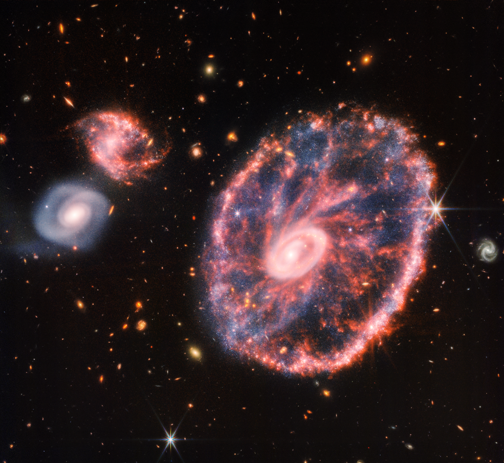

Webb captura gimnasia estelar en The Cartwheel Galaxy

El Telescopio Espacial James Webb de la NASA ha observado el caos de la Galaxia Cartwheel, revelando nuevos detalles sobre la formación de estrellas y el agujero negro central de la galaxia. La poderosa mirada infrarroja de Webb produjo esta imagen detallada de Cartwheel y dos galaxias compañeras más pequeñas contra un telón de fondo de muchas otras galaxias. Esta imagen proporciona una nueva vista de cómo ha cambiado Cartwheel Galaxy durante miles de millones de años. La galaxia Cartwheel, ubicada a unos 500 millones de años luz de distancia en la constelación de Sculptor, es un espectáculo raro. Su apariencia, muy parecida a la de la rueda de un carro, es el resultado de un evento intenso: una colisión a alta velocidad entre una gran galaxia espiral y una galaxia más pequeña que no se ve en esta imagen. Las colisiones de proporciones galácticas provocan una cascada de eventos diferentes y más pequeños entre las galaxias involucradas; Cartwheel no es una excepción. La colisión afectó más notablemente a la forma y estructura de la galaxia. Cartwheel Galaxy luce dos anillos: un anillo interior brillante y un anillo colorido circundante. Estos dos anillos se expanden hacia afuera desde el centro de la colisión, como las ondas en un estanque después de arrojar una piedra. Debido a estas características distintivas, los astrónomos la llaman "galaxia anular", una estructura menos común que las galaxias espirales como nuestra Vía Láctea. El núcleo brillante contiene una enorme cantidad de polvo caliente y las áreas más brillantes son el hogar de gigantescos cúmulos de estrellas jóvenes. Por otro lado, el anillo exterior, que se ha expandido durante unos 440 millones de años, está dominado por la formación estelar y las supernovas. A medida que este anillo se expande, choca contra el gas circundante y desencadena la formación de estrellas. Otros telescopios, incluido el Telescopio Espacial Hubble, han examinado previamente el Cartwheel. Pero la espectacular galaxia ha estado envuelta en misterio, quizás literalmente, dada la cantidad de polvo que oscurece la vista. Webb, con su capacidad para detectar luz infrarroja, ahora descubre nuevos conocimientos sobre la naturaleza de Cartwheel.